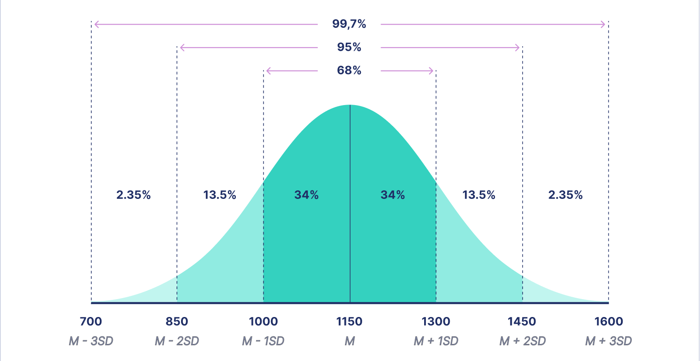
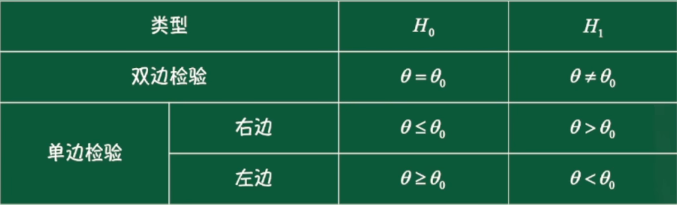

概率论
自然界与社会生活中的两类现象
概率论与数理统计是研究随机现象统计规律的数学学科
随机事件的关系即运算
随机现象 是在个别实验中结果呈现不确定性，但在大量重复试验中，其结果又具有统计规律的现象。
为了研究随机现象，就要对客观事件进行观察。观察随机现象的过程称为随机试验 ，简称试验 。
随机试验的特点 ：
在相同的条件下，试验可以重复进行。
每一次试验的可能的结果不止一个（至少两个，也可以是无穷多个），并且能事先明确试验的所有可能结果。
在每次试验之前不能确定哪一个结果会出现。
样本空间 ：随机试验 E E E S S S Ω \Omega Ω
样本点 ：样本空间的元素，即 E E E
随机试验 E E E S S S A A A E E E 随机事件 ，简称事件 。
当 A A A A A A
由一个样本点 e e e { e } \{e\} { e } 基本事件 。
由若干个基本事件组合而成的事件称为复合事件 。
样本空间 S S S S S S 必然事件 。
事件的包含 ：事件 A A A B B B A A A B B B
称事件 B B B A A A A A A B B B B ⊃ A B \supset A B ⊃ A A ⊂ B A \subset B A ⊂ B
对任何事件 A A A ∅ ⊂ A ⊂ S \varnothing \subset A \subset S ∅ ⊂ A ⊂ S
事件的相等 ：如果事件 A A A B B B A ⊃ B A \supset B A ⊃ B B B B A A A A ⊂ B A \subset B A ⊂ B A A A B B B
称事件 A A A B B B A = B A=B A = B
事件的并（和）可以推广到有限或可列个事件。
n n n A 1 , A 2 , … , A n A_1, A_2, \ldots, A_n A 1 , A 2 , … , A n 和事件 。
记作 A 1 ∪ A 2 ∪ … ∪ A n = ⋃ k = 1 n A k A_1 \cup A_2 \cup \ldots \cup A_n=\bigcup_{k=1}^n A_k A 1 ∪ A 2 ∪ … ∪ A n = ⋃ k = 1 n A k A 1 + A 2 + … + A n = ∑ k = 1 n A k A_1+A_2+\ldots+A_n=\sum_{k=1}^n A_k A 1 + A 2 + … + A n = ∑ k = 1 n A k
可列个事件 A 1 , A 2 , … , A n , … A_1, A_2, \ldots, A_n, \ldots A 1 , A 2 , … , A n , … 和事件 。
记作 ⋃ k = 1 ∞ A k \bigcup_{k=1}^{\infty} A_k ⋃ k = 1 ∞ A k ∑ k = 1 ∞ A k \sum_{k=1}^{\infty} A_k ∑ k = 1 ∞ A k
事件的交（积） ：两个事件 A A A B B B
称事件 A A A B B B A ∩ B A \cap B A ∩ B A B AB A B
A ∩ B = { x ∣ x ∈ A A \cap B=\{x \mid x \in A A ∩ B = { x ∣ x ∈ A x ∈ B } x \in B\} x ∈ B }
事件的交（积）可以推广到有限或可列个事件。
n n n A 1 , A 2 , … , A n A_1, A_2, \ldots, A_n A 1 , A 2 , … , A n 积事件 。
记作 A 1 ∩ A 2 ∩ … ∩ A n = ⋂ k = 1 n A k A_1 \cap A_2 \cap \ldots \cap A_n=\bigcap_{k=1}^n A_k A 1 ∩ A 2 ∩ … ∩ A n = ⋂ k = 1 n A k A 1 A 2 ⋯ A n A_1 A_2 \cdots A_n A 1 A 2 ⋯ A n
可列个事件 A 1 , A 2 , … , A n , … A_1, A_2, \ldots, A_n, \ldots A 1 , A 2 , … , A n , … 积事件 。
记作 ⋂ k = 1 ∞ A k \bigcap_{k=1}^{\infty} A_k ⋂ k = 1 ∞ A k
对立事件/互逆事件 ：事件 A A A B B B
称事件 A A A B B B 对立事件 ，也称 A A A B B B 互逆 。
事件 A A A A A A A A A A ˉ \bar{A} A ˉ
A ˉ = { x ∈ S ∣ x ∉ A } \bar{A}=\{x \in S \mid x \notin A\} A ˉ = { x ∈ S ∣ x ∈ / A }
事件的差 ：事件 A A A B B B
称为事件 A A A B B B A − B A-B A − B
A − B = { x ∣ x ∈ A A-B=\{x \mid x \in A A − B = { x ∣ x ∈ A x ∉ B } x \notin B\} x ∈ / B }
互不相容事件/互斥事件 ：事件 A A A B B B
称事件 A A A B B B 互不相容事件 ，也称 A A A B B B 互斥 。
A B = ∅ A B=\varnothing A B = ∅
完备事件组 ：如果事件 A 1 , … , A n A_1, \ldots, A_n A 1 , … , A n A 1 ∪ … ∪ A n = S A_1 \cup \ldots \cup A_n=S A 1 ∪ … ∪ A n = S A 1 , … , A n A_1, \ldots, A_n A 1 , … , A n
事件的运算本质就是集合的运算。
设 A , B , C A, B, C A , B , C
交换律
A ∪ B = B ∪ A A \cup B=B \cup A A ∪ B = B ∪ A A + B = B + A A+B=B+A A + B = B + A A ∩ B = B ∩ A A \cap B=B \cap A A ∩ B = B ∩ A A B = B A A B=B A A B = B A
结合律
A ∪ ( B ∪ C ) = ( A ∪ B ) ∪ C = A ∪ B ∪ C A \cup(B \cup C)=(A \cup B) \cup C=A \cup B \cup C A ∪ ( B ∪ C ) = ( A ∪ B ) ∪ C = A ∪ B ∪ C A + ( B + C ) = ( A + B ) + C = A + B + C A+(B+C)=(A+B)+C=A+B+C A + ( B + C ) = ( A + B ) + C = A + B + C A ∩ ( B ∩ C ) = ( A ∩ B ) ∩ C = A ∩ B ∩ C A \cap(B \cap C)=(A \cap B) \cap C=A \cap B \cap C A ∩ ( B ∩ C ) = ( A ∩ B ) ∩ C = A ∩ B ∩ C A ( B C ) = ( A B ) C = A B C A(B C)=(A B) C=A B C A ( B C ) = ( A B ) C = A B C
分配率
A ∪ ( B ∩ C ) = ( A ∪ B ) ∩ ( A ∪ C ) A \cup(B \cap C)=(A \cup B) \cap(A \cup C) A ∪ ( B ∩ C ) = ( A ∪ B ) ∩ ( A ∪ C ) A + B C = ( A + B ) ( A + C ) A+B C=(A+B)(A+C) A + B C = ( A + B ) ( A + C ) A ∩ ( B ∪ C ) = ( A ∩ B ) ∪ ( A ∩ C ) A \cap(B \cup C)=(A \cap B) \cup(A \cap C) A ∩ ( B ∪ C ) = ( A ∩ B ) ∪ ( A ∩ C ) A ( B + C ) = A B + A C A(B+C)=A B+A C A ( B + C ) = A B + A C
德摩根律
A ∪ B ‾ = A ˉ ∩ B ˉ \overline{A \cup B}=\bar{A} \cap \bar{B} A ∪ B = A ˉ ∩ B ˉ A + B ‾ = A ˉ B ˉ \overline{A+B}=\bar{A} \bar{B} A + B = A ˉ B ˉ A ∩ B ‾ = A ˉ ∪ B ˉ \overline{A \cap B}=\bar{A} \cup \bar{B} A ∩ B = A ˉ ∪ B ˉ A B ‾ = A ˉ + B ˉ \overline{A B}=\bar{A}+\bar{B} A B = A ˉ + B ˉ
可以推广到有限个和可列个事件。
⋃ i ∈ I A i ‾ ≡ ⋂ i ∈ I A i ‾ \overline{\bigcup_{i \in I} A_i} \equiv \bigcap_{i \in I} \overline{A_i} ⋃ i ∈ I A i ≡ ⋂ i ∈ I A i ⋂ i ∈ I A i ‾ ≡ ⋃ i ∈ I A i ‾ \overline{\bigcap_{i \in I} A_i} \equiv \bigcup_{i \in I} \overline{A_i} ⋂ i ∈ I A i ≡ ⋃ i ∈ I A i
其他运算律
等幂律：A ∪ A = A A \cup A=A A ∪ A = A A + A = A \quad A +A=A A + A = A A ∩ A = A A A = A \quad A \cap A=A \quad A A=A A ∩ A = A A A = A
0-1律：A ∪ S = S A + S = S A ∩ S = A A S = A A ∪ ∅ = A A + ∅ = A A ∩ ∅ = ∅ A ∅ = ∅ \begin{array}{ll}A \cup S=S & A+S=S \\ A \cap S=A & A S=A \\ A \cup \varnothing=A & A+\varnothing=A \\ A \cap \varnothing=\varnothing & A \varnothing=\varnothing\end{array} A ∪ S = S A ∩ S = A A ∪ ∅ = A A ∩ ∅ = ∅ A + S = S A S = A A + ∅ = A A ∅ = ∅
吸收律：若A ⊂ B A \subset B A ⊂ B A ∪ B = B A \cup B=B A ∪ B = B A ∩ B = A \quad A \cap B=A A ∩ B = A
互补律：A ∩ A ˉ = A A ˉ = ∅ A \cap \bar{A}=A \bar{A}=\varnothing A ∩ A ˉ = A A ˉ = ∅
双重否定律：A ˉ ˉ = A \bar{\bar{A}}=A A ˉ ˉ = A
概率的定义即性质
（一）频率
概率论研究的是随机现象的统计规律性。因此，仅仅知道试验中可能出现哪些事件是不够的，还必须对事件发生的可能性大小进行量的描述，也就是用一个实数来描述某个事件在一次试验中发生的可能性大小。
频率 是描述事件发生的频繁程度的一个量。
随机事件在一次试验中是否发生是不确定的，但在大量重复的试验中，该事件的发生往往具有统计规律性。所以，我们可以用大量重复试验来研究该事件发生的可能性大小。
仅从事件出现的次数不能确切地描述该事件出现的可能性的大小，还应该考虑该事件出现次数在试验总次数中所占的百分比。
设在相同的条件下，进行了 n n n n n n A A A A A A 频数 ，记作 n ( A ) n(A) n ( A ) n ( A ) / n n(A) / n n ( A ) / n A A A 频率 ，记作 f n ( A ) f_n(A) f n ( A ) f n ( A ) = n ( A ) n f_n(A)=\frac{n(A)}{n} f n ( A ) = n n ( A )
基本性质 ：
非负性：0 ≤ f n ( A ) ≤ 1 0 \leq f_n(A) \leq 1 0 ≤ f n ( A ) ≤ 1
规范性：f n ( ∅ ) = 0 f_n(\varnothing)=0 f n ( ∅ ) = 0 f n ( S ) = 1 f_n(S)=1 f n ( S ) = 1
可加性：设 A A A B B B f n ( A ∪ B ) = f n ( A ) + f n ( B ) f_n(A \cup B)=f_n(A)+f_n(B) f n ( A ∪ B ) = f n ( A ) + f n ( B )
设 A 1 , A 2 , … , A k A_1, A_2, \ldots, A_k A 1 , A 2 , … , A k f n ( A 1 ∪ A 2 ∪ … ∪ A k ) = f n ( A 1 ) + f n ( A 2 ) + … + f n ( A k ) f_n\left(A_1 \cup A_2 \cup \ldots \cup A_k\right)=f_n\left(A_1\right)+f_n\left(A_2\right)+\ldots+f_n\left(A_k\right) f n ( A 1 ∪ A 2 ∪ … ∪ A k ) = f n ( A 1 ) + f n ( A 2 ) + … + f n ( A k )
（二）概率
随着 n n n A A A f n ( A ) f_n(A) f n ( A ) 0 0 0 1 1 1 n n n f n ( A ) f_n(A) f n ( A ) A A A
概率的统计定义 ：事件 A A A p p p A A A P ( A ) P(A) P ( A ) P ( A ) = p P(A)=p P ( A ) = p
当试验次数 n n n P ( A ) ≈ f n ( A ) = n ( A ) n P(A) \approx f_n(A)=\frac{n(A)}{n} P ( A ) ≈ f n ( A ) = n n ( A )
但是在实际问题中，我们不可能对每一个事件都通过做大量的试验来求得事件的频率，并用来表示该事件发生可能性的大小。同时，为了理论研究的需要，我们需要将事件发生的可能性给出一个数学上的定义。为此，我们从频率的稳定性和频率的性质得到启发，给出表征事件发生可能性大小的概率的定义：概率的公理化定义。
概率的公理化定义 ：设 E E E S S S E E E A A A P ( A ) P(A) P ( A ) A A A
函数 P ( A ) P(A) P ( A )
非负性：对每一个事件 A A A P ( A ) ≥ 0 P(A)≥0 P ( A ) ≥ 0
规范性：对于必然事件 S S S P ( S ) = 1 P(S)=1 P ( S ) = 1
可列可加性：对于两两互不相容的事件 A 1 , A 2 , … A_1, A_2, \ldots A 1 , A 2 , … P ( A 1 ∪ A 2 ∪ … ) = P ( A 1 ) + P ( A 2 ) + … P\left(A_1 \cup A_2 \cup \ldots\right)=P\left(A_1\right)+P\left(A_2\right)+\ldots P ( A 1 ∪ A 2 ∪ … ) = P ( A 1 ) + P ( A 2 ) + … P ( ⋃ i = 1 ∞ A i ) = ∑ i = 1 ∞ P ( A i ) P\left(\bigcup_{i=1}^{\infty} A_i\right)=\sum_{i=1}^{\infty} P\left(A_i\right) P ( ⋃ i = 1 ∞ A i ) = ∑ i = 1 ∞ P ( A i )
==概率的本质：概率P P P P : { P:\{ P : { } → R \} \rightarrow R } → R
（三）概率的性质
P ( ∅ ) = 0 P(\varnothing)=0 P ( ∅ ) = 0 有限可加性， 设 A 1 , A 2 , … , A n A_1, A_2, \ldots, A_n A 1 , A 2 , … , A n P ( A 1 ∪ A 2 ∪ … ∪ A n ) = P ( A 1 ) + P ( A 2 ) + … + P ( A n ) P\left(A_1 \cup A_2 \cup \ldots \cup A_n\right)=P\left(A_1\right)+P\left(A_2\right)+\ldots+P\left(A_n\right) P ( A 1 ∪ A 2 ∪ … ∪ A n ) = P ( A 1 ) + P ( A 2 ) + … + P ( A n )
设事件 A A A B B B A ⊂ B A \subset B A ⊂ B
单调性：P ( A ) ≤ P ( B ) P(A) \leq P(B) P ( A ) ≤ P ( B )
减法公式：P ( B − A ) = P ( B ) − P ( A ) P(B-A)=P(B)-P(A) P ( B − A ) = P ( B ) − P ( A )
对任何事件 A A A 0 ≤ P ( A ) ≤ 1 0 \leq P(A) \leq 1 0 ≤ P ( A ) ≤ 1 0 0 0 1 1 1
逆事件的概率，对任何事件 A A A P ( A ) + P ( A ˉ ) = 1 P(A)+P(\bar{A})=1 P ( A ) + P ( A ˉ ) = 1 P ( A ˉ ) = 1 − P ( A ) P(\bar{A})=1-P(A) P ( A ˉ ) = 1 − P ( A )
加法公式，对于任意两个事件 A A A B B B P ( A ∪ B ) = P ( A ) + P ( B ) − P ( A B ) P(A \cup B)=P(A)+P(B)-P(A B) P ( A ∪ B ) = P ( A ) + P ( B ) − P ( A B )
古典概型与几何概型
古典概型 ：
试验的样本空间包含有限个元素
试验中每个基本事件发生的可能性相同
具有以上两个特点的试验大量存在。这种试验称为等可能概型 。它在概率论发展初期曾经是主要研究对象，所以也称为古典概型 。
设 E E E n n n S = { e 1 , e 2 , … , e n } S=\left\{e_1, e_2, \ldots, e_n\right\} S = { e 1 , e 2 , … , e n } e i e_i e i
P ( { e i } ) = 1 n ( i = 1 , 2 , … , n ) P\left(\left\{e_i\right\}\right)=\frac{1}{n}(i=1,2, \ldots, n)
P ( { e i } ) = n 1 ( i = 1 , 2 , … , n )
设事件A A A k k k A = { e i 1 , e i 2 , … , e i k } A=\left\{e_{i_1}, e_{i_2}, \ldots, e_{i_k}\right\} A = { e i 1 , e i 2 , … , e i k } A A A
P(A)=P\left(\left\{e_{i_1}, e_{i_2}, \ldots, e_{i_k}\right\}=P\left(\left\{e_{i_1}\right\} \cup\left\{e_{i_2}\right\} \cup \ldots \cup\left\{e_{i_k}\right\}\right)\right.=P\left(\left\{e_{i_1}\right\}\right)+P\left\{\left\{e_{i_2}\right\}\right\}+\ldots+P\left(\left\{e_{i_k}\right\}\right)=\frac{1}{n}+\frac{1}{n}+\ldots+\frac{1}{n}=\frac{k}{n}$
几何概型 ：设试验的样本空间为一几何区域，其测度（长度、面积或体积等） 为有限值，若任意事件发生的概率与的测度成正比，则称该试验为几何概型 。
条件概率与乘法公式
设 A A A B B B p ( A ) > 0 p(A)>0 p ( A ) > 0 P ( A B ) P ( A ) \frac{P(A B)}{P(A)} P ( A ) P ( A B ) A A A B B B 条件概率 ，记作 P ( B ∣ A ) P(B \mid A) P ( B ∣ A ) P ( B ∣ A ) = P ( A B ) P ( A ) P(B \mid A)=\frac{P(A B)}{P(A)} P ( B ∣ A ) = P ( A ) P ( A B )
非负性，对任何事件 B B B P ( B ∣ A ) = P ( A B ) P ( A ) ≥ 0 P(B \mid A)=\frac{P(A B)}{P(A)} \geq 0 P ( B ∣ A ) = P ( A ) P ( A B ) ≥ 0
规范性，对必然事件 S S S P ( S ∣ A ) = P ( A S ) P ( A ) = P ( A ) P ( A ) = 1 P(S \mid A)=\frac{P(A S)}{P(A)}=\frac{P(A)}{P(A)}=1 P ( S ∣ A ) = P ( A ) P ( A S ) = P ( A ) P ( A ) = 1
可列可加性，设 B 1 , B 2 , … B_1, B_2, \ldots B 1 , B 2 , …
P ( ⋃ i = 1 ∞ B i ∣ A ) = P [ A ( ⋃ i = 1 ∞ B i ) ] P ( A ) = P ( ⋃ i = 1 ∞ A B i ) P ( A ) = ∑ i = 1 ∞ P ( A B i ) P ( A ) = ∑ i = 1 ∞ P ( A B i ) P ( A ) = ∑ i = 1 ∞ P ( B i ∣ A ) P\left(\bigcup_{i=1}^{\infty} B_i \mid A\right)=\frac{P\left[A\left(\bigcup_{i=1}^{\infty} B_i\right)\right]}{P(A)}=\frac{P\left(\bigcup_{i=1}^{\infty} A B_i\right)}{P(A)}=\frac{\sum_{i=1}^{\infty} P\left(A B_i\right)}{P(A)}=\sum_{i=1}^{\infty} \frac{P\left(A B_i\right)}{P(A)}=\sum_{i=1}^{\infty} P\left(B_i \mid A\right)
P ( i = 1 ⋃ ∞ B i ∣ A ) = P ( A ) P [ A ( ⋃ i = 1 ∞ B i ) ] = P ( A ) P ( ⋃ i = 1 ∞ A B i ) = P ( A ) ∑ i = 1 ∞ P ( A B i ) = i = 1 ∑ ∞ P ( A ) P ( A B i ) = i = 1 ∑ ∞ P ( B i ∣ A )
乘法公式 ：P ( A B ) = P ( A ) P ( B ∣ A ) ( P ( A ) > 0 ) P(A B)=P(A) P(B \mid A) \quad(P(A)>0) P ( A B ) = P ( A ) P ( B ∣ A ) ( P ( A ) > 0 )
推广：P ( A B C ) = P ( A ) P ( B ∣ A ) P ( C ∣ A B ) ( P ( A B ) > 0 ) P(A B C)=P(A) P(B \mid A) P(C \mid A B) \quad(P(A B)>0) P ( A B C ) = P ( A ) P ( B ∣ A ) P ( C ∣ A B ) ( P ( A B ) > 0 )
更加一般的：
P ( A 1 A 2 A 3 ⋯ A n ) = P ( A 1 ) P ( A 2 ∣ A 1 ) P ( A 3 ∣ A 1 A 2 ) ⋯ P ( A n ∣ A 1 A 2 ⋯ A n − 1 ) ( P ( A 1 A 2 ⋯ A n − 1 A n ) > 0 ) \begin{aligned} P\left(A_1 A_2 A_3 \cdots A_n\right)=P\left(A_1\right) & P\left(A_2 \mid A_1\right) P\left(A_3 \mid A_1 A_2\right) \cdots P\left(A_n \mid A_1 A_2 \cdots A_{n-1}\right) & \left(P\left(A_1 A_2 \cdots A_{n-1} A_n\right)>0\right)\end{aligned}
P ( A 1 A 2 A 3 ⋯ A n ) = P ( A 1 ) P ( A 2 ∣ A 1 ) P ( A 3 ∣ A 1 A 2 ) ⋯ P ( A n ∣ A 1 A 2 ⋯ A n − 1 ) ( P ( A 1 A 2 ⋯ A n − 1 A n ) > 0 )
全概率公式与贝叶斯公式
【定理】设试验 E E E B 1 , B 2 , … , B n B_1, B_2, \ldots, B_n B 1 , B 2 , … , B n S S S P ( B i ) > 0 P\left(B_i\right)>0 P ( B i ) > 0 i = 1 , 2 , … , n i=1,2, \ldots, n i = 1 , 2 , … , n A A A E E E
P ( A ) = P ( B 1 ) P ( A ∣ B 1 ) + P ( B 2 ) P ( A ∣ B 2 ) + … + P ( B n ) P ( A ∣ B n ) ) = ∑ i = 1 n P ( B i ) P ( A ∣ B i ) \begin{aligned} P(A)= & P\left(B_1\right) P\left(A \mid B_1\right)+P\left(B_2\right) P\left(A \mid B_2\right) \left.+\ldots+P\left(B_n\right) P\left(A \mid B_n\right)\right)=\sum_{i=1}^n P\left(B_i\right) P\left(A \mid B_i\right)\end{aligned}
P ( A ) = P ( B 1 ) P ( A ∣ B 1 ) + P ( B 2 ) P ( A ∣ B 2 ) + … + P ( B n ) P ( A ∣ B n ) ) = i = 1 ∑ n P ( B i ) P ( A ∣ B i )
意义 ：事件 A A A B i B_i B i i = 1 , . . . n i=1,...n i = 1 , . . . n A A A B i B_i B i A A A P ( A B i ) = P ( B i ) P ( A ∣ B i ) P\left(A B_i\right)=P\left(B_i\right) P\left(A \mid B_i\right) P ( A B i ) = P ( B i ) P ( A ∣ B i ) A A A A A A A A A
由此可以形象地把全概率公式看成是“==由原因推结果==”的公式。
【定理】设试验 E E E S S S B 1 , B 2 . . . B n B_1, B_2...B_n B 1 , B 2 . . . B n S S S P ( B i ) > 0 P(B_i)>0 P ( B i ) > 0 i = 1 , 2 , . . n i=1,2,..n i = 1 , 2 , . . n A A A E E E P ( A ) > 0 P(A)>0 P ( A ) > 0
P ( B i ∣ A ) = P ( B i ) P ( A ∣ B i ) ∑ j = 1 n P ( B j ) P ( A ∣ B j ) ( i = 1 , 2 , … , n ) P\left(B_i \mid A\right)=\frac{P\left(B_i\right) P\left(A \mid B_i\right)}{\sum_{j=1}^n P\left(B_j\right) P\left(A \mid B_j\right)}(i=1,2, \ldots, n)
P ( B i ∣ A ) = ∑ j = 1 n P ( B j ) P ( A ∣ B j ) P ( B i ) P ( A ∣ B i ) ( i = 1 , 2 , … , n )
意义 ：在事件 A A A A A A B i B_i B i
由此可以形象地把贝叶斯公式看成是“==由结果推原因==”的公式。
事件的独立性
设 A A A B B B P ( A B ) = P ( A ) P ( B ) P(AB)=P(A)P(B) P ( A B ) = P ( A ) P ( B ) A A A B B B A A A B B B 独立 。
一维随机变量
一维随机变量 ：随机变量 X X X S = { e } S=\{e\} S = { e }
X = X ( e ) X=X(e)
X = X ( e )
一维离散型随机变量
一维离散型随机变量 ：随机变量的全部可能取值是有限个或可列无限个。可列无限个是指能与自然数一一对应上。
一维离散型随机变量的分布律 ：设离散型随机变量 X X X x k ( k = 1 , 2 , ⋯ ) x_k \ (k=1,2,\cdots) x k ( k = 1 , 2 , ⋯ ) X X X P ( X = x k ) = p k ( k = 1 , 2 , 3 , ⋯ ) P\left(X=x_k\right)=p_k \ (k=1,2,3, \cdots) P ( X = x k ) = p k ( k = 1 , 2 , 3 , ⋯ ) X X X
X x 1 x 2 x 3 ⋯ x n … p k p 1 p 2 p 3 ⋯ p n ⋯ \begin{array}{l|l|l|l|l|l|l}
X & x_1 & x_2 & x_3 & \cdots & x_n & \ldots \\
\hline p_k & p_1 & p_2 & p_3 & \cdots & p_n & \cdots
\end{array}
X p k x 1 p 1 x 2 p 2 x 3 p 3 ⋯ ⋯ x n p n … ⋯
注
p k ≥ 0 , ( k = 1 , 2 , ⋯ ) p_k \geq 0,(k=1,2, \cdots) p k ≥ 0 , ( k = 1 , 2 , ⋯ ) ∑ k = 1 + ∞ p k = 1 \sum_{k=1}^{+\infty} p_k=1 ∑ k = 1 + ∞ p k = 1
常见的一维离散型随机变量：
0 − 1 0-1 0 − 1 X X X 0 0 0 1 1 1
X 0 1 p k 1 − p p \begin{array}{c|c|c}
X & 0 & 1 \\
\hline p_k & 1-p & p
\end{array}
X p k 0 1 − p 1 p
二项分布 ：只有两个结果的随机试验称为伯努利试验 ，观察 A A A A A A n n n n n n 。随机变量 X X X n n n A A A A A A p ( 0 < p < 1 ) p(0<p<1) p ( 0 < p < 1 ) A A A q ( q = 1 − p ) q(q=1-p) q ( q = 1 − p ) n n n A A A k k k
P ( X = k ) = C n k p k q n − k ( k = 0 , 1 , 2 , ⋯ ) P(X=k)=C_n^k p^k q^{n-k} \quad (k=0,1,2, \cdots)
P ( X = k ) = C n k p k q n − k ( k = 0 , 1 , 2 , ⋯ )
记为 X ∼ B ( n , p ) X \sim B(n,p) X ∼ B ( n , p )
泊松分布 ：对应的分布律
P ( X = k ) = λ k e − λ k ! ( k = 0 , 1 , 2 , ⋯ ) P(X=k)=\frac{\lambda^k e^{-\lambda}}{k !} \quad (k=0,1,2, \cdots)
P ( X = k ) = k ! λ k e − λ ( k = 0 , 1 , 2 , ⋯ )
λ > 0 \lambda >0 λ > 0
记为 X ∼ P ( λ ) X \sim P(\lambda) X ∼ P ( λ )
泊松定理 ：设 λ > 0 \lambda >0 λ > 0 n n n n p n = λ np_n=\lambda n p n = λ k k k
lim n → ∞ C n k p n k ( 1 − p n ) n − k = λ k e − λ k ! \lim _{n \rightarrow \infty} C_n^k p_n^k\left(1-p_n\right)^{n-k}=\frac{\lambda^k e^{-\lambda}}{k !}
n → ∞ lim C n k p n k ( 1 − p n ) n − k = k ! λ k e − λ
如果 X ∼ B ( n , p ) X \sim B(n,p) X ∼ B ( n , p ) n n n p p p X ∼ P ( λ = n p ) X \sim P(\lambda=np) X ∼ P ( λ = n p )
P ( X = k ) = C n k p k ( 1 − p ) n − k ≈ ( n p ) k e − n k ! P(X=k)=C_n^k p^k(1-p)^{n-k} \approx \frac{(n p)^k e^{-n}}{k !}
P ( X = k ) = C n k p k ( 1 − p ) n − k ≈ k ! ( n p ) k e − n
一维随机变量的分布函数 ：设 X X X x x x F ( x ) F(x) F ( x ) X X X
F ( x ) = P ( X ≤ x ) − ∞ < x < + ∞ F(x)=P(X \leq x) \quad -\infty<x<+\infty
F ( x ) = P ( X ≤ x ) − ∞ < x < + ∞
注：
F ( x ) F(x) F ( x ) P ( a < X ≤ b ) = F ( b ) − F ( a ) P(a<X \leq b)=F(b)-F(a) P ( a < X ≤ b ) = F ( b ) − F ( a ) 0 ≤ F ( x ) ≤ 1 , F ( − ∞ ) = 0 , F ( + ∞ ) = 1 0 \leq F(x) \leq 1, F(-\infty)=0, F(+\infty)=1 0 ≤ F ( x ) ≤ 1 , F ( − ∞ ) = 0 , F ( + ∞ ) = 1 F ( x ) F(x) F ( x )
一维连续型随机变量
一维连续型随机变量 ：设 X X X x x x F ( x ) F(x) F ( x ) X X X f ( x ) f(x) f ( x ) x x x
F ( x ) = ∫ − ∞ x f ( t ) d t F(x)=\int_{-\infty}^x f(t) d t
F ( x ) = ∫ − ∞ x f ( t ) d t
则称 X X X 一维连续型随机变量 ，f ( x ) f(x) f ( x ) X X X 概率密度函数 。
注：
f ( x ) ⩾ 0 f(x) \geqslant 0 f ( x ) ⩾ 0 ∫ − ∞ + ∞ f ( x ) d x = 1 \int_{-\infty}^{+\infty} f(x) d x=1 ∫ − ∞ + ∞ f ( x ) d x = 1 P ( x 1 < X ≤ x 2 ) = F ( x 2 ) − F ( x 1 ) = ∫ x 1 x 2 f ( x ) d x P\left(x_1<X \leq x_2\right)=F\left(x_2\right)-F\left(x_1\right)=\int_{x_1}^{x_2} f(x) d x P ( x 1 < X ≤ x 2 ) = F ( x 2 ) − F ( x 1 ) = ∫ x 1 x 2 f ( x ) d x P ( x 1 < X ≤ x 2 ) = P ( x 1 ≤ X ≤ x 2 ) = P ( x 1 ≤ X < x 2 ) = P ( x 1 < X < x 2 ) P\left(x_1<X \leq x_2\right)=P\left(x_1 \leq X \leq x_2\right)=P\left(x_1 \leq X<x_2\right)=P\left(x_1<X<x_2\right) P ( x 1 < X ≤ x 2 ) = P ( x 1 ≤ X ≤ x 2 ) = P ( x 1 ≤ X < x 2 ) = P ( x 1 < X < x 2 ) 若 f ( x ) f(x) f ( x ) x x x F ′ ( x ) = f ( x ) F^{\prime}(x)=f(x) F ′ ( x ) = f ( x )
常见的一维连续型随机变量：
均匀分布 ：若一维连续型随机变量 X X X
f ( x ) = { 1 b − a , a < x < b 0 , 其他 f(x)=\left\{\begin{array}{cc}
\frac{1}{b-a}, & a<x<b \\
0, & \text { 其他 }
\end{array}\right.
f ( x ) = { b − a 1 , 0 , a < x < b 其他
则称 X X X ( a , b ) (a,b) ( a , b ) X ∼ U ( a , b ) X \sim U(a, b) X ∼ U ( a , b )
X X X F ( x ) F(x) F ( x )
F ( x ) = { 0 , x < a x − a b − a , a ≤ x < b 1 , x ≥ b F(x)=\left\{\begin{array}{cc}
0, & x<a \\
\frac{x-a}{b-a}, & a \leq x<b \\
1, & x \geq b
\end{array}\right.
F ( x ) = ⎩ ⎪ ⎨ ⎪ ⎧ 0 , b − a x − a , 1 , x < a a ≤ x < b x ≥ b
指数分布 ：若一维连续型随机变量 X X X
f ( x ) = { λ e − λ x , x > 0 0 , 其他 f(x)=\left\{\begin{array}{cc}
\lambda e^{-\lambda x}, & x>0 \\
0, & \text { 其他 }
\end{array}\right.
f ( x ) = { λ e − λ x , 0 , x > 0 其他
其中 λ > 0 \lambda>0 λ > 0 X X X λ \lambda λ X ∼ E ( λ ) X \sim E(\lambda) X ∼ E ( λ )
X X X F ( x ) F(x) F ( x )
F ( x ) = { 1 − e − λ x , x > 0 0 , 其他 F(x)=\left\{\begin{array}{cc}
1-e^{-\lambda x}, & x>0 \\
0, & \text { 其他 }
\end{array}\right.
F ( x ) = { 1 − e − λ x , 0 , x > 0 其他
指数分布的无记忆性 ：对于任意的 s , t > 0 s, t>0 s , t > 0 P ( X > s + t ∣ X > s ) = P ( X > t ) P(X>s+t \mid X>s)=P(X>t) P ( X > s + t ∣ X > s ) = P ( X > t )
正态分布/常态分布/高斯分布 ：若一维连续型随机变量 X X X
φ ( x ) = 1 2 π σ e − ( x − μ ) 2 2 σ 2 ( − ∞ < x < + ∞ ) \varphi(x)=\frac{1}{\sqrt{2 \pi} \sigma} e^{-\frac{(x-\mu)^2}{2 \sigma^2}} \quad \left(-\infty<x<+\infty\right)
φ ( x ) = 2 π σ 1 e − 2 σ 2 ( x − μ ) 2 ( − ∞ < x < + ∞ )
其中 μ , σ ( σ > 0 ) \mu, \sigma(\sigma>0) μ , σ ( σ > 0 ) X X X μ \mu μ σ \sigma σ X ∼ N ( μ , σ 2 ) X \sim N\left(\mu, \sigma^2\right) X ∼ N ( μ , σ 2 )

标准正态分布 ：X ∼ N ( 0 , 1 ) X \sim N\left(0, 1\right) X ∼ N ( 0 , 1 )
f ( x ) = 1 2 π e − x 2 2 − ∞ < x < + ∞ f(x)=\frac{1}{\sqrt{2 \pi}} e^{-\frac{x^2}{2}} \quad -\infty<x<+\infty
f ( x ) = 2 π 1 e − 2 x 2 − ∞ < x < + ∞
注：
概率密度 f ( x ) f(x) f ( x ) x = 0 x=0 x = 0
分布函数 Φ ( − x ) = 1 − Φ ( x ) \Phi(-x)=1-\Phi(x) Φ ( − x ) = 1 − Φ ( x )
若 X ∼ N ( μ , σ 2 ) X \sim N\left(\mu, \sigma^2\right) X ∼ N ( μ , σ 2 ) Z = X − μ σ ∼ N ( 0 , 1 ) Z=\frac{X-\mu}{\sigma} \sim N(0,1) Z = σ X − μ ∼ N ( 0 , 1 )
F ( x ) = P ( X ≤ x ) = P ( X − μ σ ≤ x − μ σ ) = P ( Z ≤ x − μ σ ) = Φ ( x − μ σ ) F(x)=P(X \leq x)=P\left(\frac{X-\mu}{\sigma} \leq \frac{x-\mu}{\sigma}\right)=P\left(Z \leq \frac{x-\mu}{\sigma}\right)=\Phi\left(\frac{x-\mu}{\sigma}\right)
F ( x ) = P ( X ≤ x ) = P ( σ X − μ ≤ σ x − μ ) = P ( Z ≤ σ x − μ ) = Φ ( σ x − μ )
P ( x 1 < X < x 2 ) = P ( x 1 − μ σ < X − μ σ ≤ x 2 − μ σ ) = Φ ( x 2 − μ σ ) − Φ ( x 1 − μ σ ) P\left(x_1<X<x_2\right)=P\left(\frac{x_1-\mu}{\sigma}<\frac{X-\mu}{\sigma} \leq \frac{x_2-\mu}{\sigma}\right)=\Phi\left(\frac{x_2-\mu}{\sigma}\right)-\Phi\left(\frac{x_1-\mu}{\sigma}\right)
P ( x 1 < X < x 2 ) = P ( σ x 1 − μ < σ X − μ ≤ σ x 2 − μ ) = Φ ( σ x 2 − μ ) − Φ ( σ x 1 − μ )
P ( X ≥ x ) = 1 − P ( X < x ) = 1 − P ( X − μ σ < x − μ σ ) = 1 − Φ ( x − μ σ ) P(X \geq x)=1-P(X<x)=1-P\left(\frac{X-\mu}{\sigma}<\frac{x-\mu}{\sigma}\right)=1-\Phi\left(\frac{x-\mu}{\sigma}\right)
P ( X ≥ x ) = 1 − P ( X < x ) = 1 − P ( σ X − μ < σ x − μ ) = 1 − Φ ( σ x − μ )
一维随机变量函数的分布
二维随机变量
二维离散型随机变量
二维随机变量 ：设 E E E S = { e } S=\{e\} S = { e } X = X ( e ) X=X(e) X = X ( e ) Y = Y ( e ) Y=Y(e) Y = Y ( e ) ( X , Y ) (X,Y) ( X , Y )
二维离散型随机变量 ：对应
P { X = x i , Y = y j } = p i ( i , j = 1 , 2 , ⋯ ) P\left\{X=x_i, Y=y_j\right\}=p_i \quad (i, j=1,2, \cdots)
P { X = x i , Y = y j } = p i ( i , j = 1 , 2 , ⋯ )
注：
p i j ≥ 0 p_{i j} \geq 0 p i j ≥ 0 ∑ i ∑ j p i j = 1 \sum_i \sum_j p_{i j}=1 ∑ i ∑ j p i j = 1
F ( x , y ) = P { X ≤ x , Y ≤ y } = ∑ x i ≤ x , y ≤ y ∑ y p y ( i , j = 1 , 2 , ⋯ ) F(x, y)=P\{X \leq x, Y \leq y\}=\sum_{x_i \leq x, y \leq y} \sum_y p_y \quad (i, j=1,2, \cdots)
F ( x , y ) = P { X ≤ x , Y ≤ y } = x i ≤ x , y ≤ y ∑ y ∑ p y ( i , j = 1 , 2 , ⋯ )
边缘分布 ：单独考虑随机变量 X X X Y Y Y
P i ⋅ = ∑ j p i ( j = 1 , 2 , ⋯ ) P_{i \cdot}=\sum_j p_i \quad (j=1,2, \cdots)
P i ⋅ = j ∑ p i ( j = 1 , 2 , ⋯ )
F X ( x ) = P { X ≤ x } F_X(x)=P\{X \leq x\}
F X ( x ) = P { X ≤ x }
P ⋅ j = ∑ i p j ( i = 1 , 2 , ⋯ ) P_{\cdot j}=\sum_i p_j \quad (i=1,2, \cdots)
P ⋅ j = i ∑ p j ( i = 1 , 2 , ⋯ )
F Y ( y ) = P { Y ≤ y } F_Y(y)=P\{Y \leq y\}
F Y ( y ) = P { Y ≤ y }
条件分布
独立性 ：关心两个随机变量之间是否存在某种依赖关系。对于二维随机变量 X X X Y Y Y
⇔ \Leftrightarrow ⇔ P i j = P i ⋅ × P ⋅ j ( i , j = 1 , 2 , ⋯ ) P_{i j}=P_{i \cdot} \times P_{\cdot j} \quad (i, j=1,2, \cdots) P i j = P i ⋅ × P ⋅ j ( i , j = 1 , 2 , ⋯ )
⇔ \Leftrightarrow ⇔ F ( x , y ) = F X ( x ) ⋅ F Y ( y ) F(x, y)=F_X(x) \cdot F_Y(y) F ( x , y ) = F X ( x ) ⋅ F Y ( y )
二维连续型随机变量
联合概率密度 ：f ( x , y ) f(x,y) f ( x , y )
联合概率分布函数 ：F ( x , y ) F(x,y) F ( x , y )
F ( x , y ) = P { X ≤ x , Y ≤ y } = ∫ − ∞ y ∫ − ∞ x f ( u , v ) d u d v F(x, y)=P\{X \leq x, Y \leq y\}=\int_{-\infty}^y \int_{-\infty}^x f(u, v) d u d v
F ( x , y ) = P { X ≤ x , Y ≤ y } = ∫ − ∞ y ∫ − ∞ x f ( u , v ) d u d v
注：
f ( x , y ) ≥ 0 f(x, y) \geq 0 f ( x , y ) ≥ 0 ∫ − ∞ + ∞ ∫ − ∞ + ∞ f ( x , y ) d x d y = F ( + ∞ , + ∞ ) = 1 \int_{-\infty}^{+\infty} \int_{-\infty}^{+\infty} f(x, y) d x d y=F(+\infty,+\infty)=1 ∫ − ∞ + ∞ ∫ − ∞ + ∞ f ( x , y ) d x d y = F ( + ∞ , + ∞ ) = 1 设 G G G x O y xOy x O y X , Y X,Y X , Y G G G
∬ G f ( x , y ) d x d y \iint_G f(x, y) d x d y
∬ G f ( x , y ) d x d y
P { a < x < b , c < y < d } = ∫ c d ∫ a b f ( x , y ) d x d y P\{a<x<b, c<y<d\}=\int_c^d \int_a^b f(x, y) d x d y
P { a < x < b , c < y < d } = ∫ c d ∫ a b f ( x , y ) d x d y
若 f ( x , y ) f(x,y) f ( x , y ) ( x , y ) (x,y) ( x , y ) ∂ 2 F ( x , y ) ∂ x ∂ y = f ( x , y ) \frac{\partial^2 F(x, y)}{\partial x \partial y}=f(x, y) ∂ x ∂ y ∂ 2 F ( x , y ) = f ( x , y )
边缘分布 ：单独考虑随机变量 X X X Y Y Y
f X ( x ) = [ F X ( x ) ] ′ = ∫ − ∞ + ∞ f ( x , y ) d y f_X(x)=\left[F_X(x)\right]^{\prime}=\int_{-\infty}^{+\infty} f(x, y) d y
f X ( x ) = [ F X ( x ) ] ′ = ∫ − ∞ + ∞ f ( x , y ) d y
F X ( x ) = F ( x , + ∞ ) = ∫ − ∞ x [ ∫ − ∞ + ∞ f ( x , y ) d y ] d x F_X(x)=F(x,+\infty)=\int_{-\infty}^x\left[\int_{-\infty}^{+\infty} f(x, y) d y\right] d x
F X ( x ) = F ( x , + ∞ ) = ∫ − ∞ x [ ∫ − ∞ + ∞ f ( x , y ) d y ] d x
f Y ( y ) = [ F Y ( y ) ] ′ = ∫ − ∞ + ∞ f ( x , y ) d x f_Y(y)=\left[F_Y(y)\right]^{\prime}=\int_{-\infty}^{+\infty} f(x, y) d x
f Y ( y ) = [ F Y ( y ) ] ′ = ∫ − ∞ + ∞ f ( x , y ) d x
F Y ( y ) = F ( + ∞ , y ) = ∫ − ∞ y [ ∫ − ∞ + ∞ f ( x , y ) d x ] d y F_Y(y)=F(+\infty, y)=\int_{-\infty}^y\left[\int_{-\infty}^{+\infty} f(x, y) d x\right] d y
F Y ( y ) = F ( + ∞ , y ) = ∫ − ∞ y [ ∫ − ∞ + ∞ f ( x , y ) d x ] d y
条件分布 ：
对于 f Y ( y ) > 0 f_Y(y)>0 f Y ( y ) > 0
f X ∣ Y ( X = x ∣ Y = y ) = f ( x , y ) f Y ( y ) f_{X \mid Y}(X=x \mid Y=y)=\frac{f(x, y)}{f_Y(y)}
f X ∣ Y ( X = x ∣ Y = y ) = f Y ( y ) f ( x , y )
对于 f X ( x ) > 0 f_X(x)>0 f X ( x ) > 0
f Y ∣ X ( Y = y ∣ X = x ) = f ( x , y ) f X ( x ) f_{Y \mid X}(Y=y \mid X=x)=\frac{f(x, y)}{f_X(x)}
f Y ∣ X ( Y = y ∣ X = x ) = f X ( x ) f ( x , y )
独立性 ：关心两个随机变量之间是否存在某种依赖关系。对于二维随机变量 X X X Y Y Y
f ( x , y ) = f X ( x ) ⋅ f Y ( y ) f(x, y)=f_X(x) \cdot f_Y(y)
f ( x , y ) = f X ( x ) ⋅ f Y ( y )
常用的二维连续型随机变量分布：
二维连续型随机变量均匀分布 ：若二维连续型随机变量 ( X , Y ) (X,Y) ( X , Y )
f ( x , y ) = { 1 A , ( x , y ) ∈ G 0 , 其他 f(x, y)=\left\{\begin{array}{cc}
\frac{1}{A}, & (x, y) \in G \\
0, & \text { 其他 }
\end{array}\right.
f ( x , y ) = { A 1 , 0 , ( x , y ) ∈ G 其他
则称 X X X G G G G G G A A A
二维连续型随机变量正态分布 ：若二维连续型随机变量 ( X , Y ) (X,Y) ( X , Y )
f ( x , y ) = 1 2 π σ 1 σ 2 1 − ρ 2 exp { − 1 2 ( 1 − ρ 2 ) [ ( x − μ 1 ) 2 σ 1 2 − 2 ρ ( x − μ 1 ) ( y − μ 2 ) σ 1 σ 2 + ( y − μ 2 ) 2 σ 2 2 ] } f(x, y)=\frac{1}{2 \pi \sigma_1 \sigma_2 \sqrt{1-\rho^2}} \exp \left\{-\frac{1}{2\left(1-\rho^2\right)}\left[\frac{\left(x-\mu_1\right)^2}{\sigma_1^2}-2 \rho \frac{\left(x-\mu_1\right)\left(y-\mu_2\right)}{\sigma_1 \sigma_2}+\frac{\left(y-\mu_2\right)^2}{\sigma_2^2}\right]\right\}
f ( x , y ) = 2 π σ 1 σ 2 1 − ρ 2 1 exp { − 2 ( 1 − ρ 2 ) 1 [ σ 1 2 ( x − μ 1 ) 2 − 2 ρ σ 1 σ 2 ( x − μ 1 ) ( y − μ 2 ) + σ 2 2 ( y − μ 2 ) 2 ] }
其中 ( − ∞ < x , y < + ∞ ) (-\infty<x, y<+\infty) ( − ∞ < x , y < + ∞ ) σ 1 > 0 \sigma_1>0 σ 1 > 0 σ 2 > 0 \sigma_2>0 σ 2 > 0 − 1 < ρ < 1 -1<\rho<1 − 1 < ρ < 1 ( X , Y ) (X,Y) ( X , Y ) σ 1 , σ 2 , μ 1 , μ 2 , ρ \sigma_1, \sigma_2, \mu_1, \mu_2, \rho σ 1 , σ 2 , μ 1 , μ 2 , ρ ( X , Y ) ∼ N ( μ 1 , σ 1 2 ; μ 1 , σ 2 2 ; , ρ ) (X, Y) \sim N\left(\mu_1, \sigma_1^2 ; \mu_1, \sigma_2^2 ;, \rho\right) ( X , Y ) ∼ N ( μ 1 , σ 1 2 ; μ 1 , σ 2 2 ; , ρ )
特别地，当 μ 1 = 0 \mu_1=0 μ 1 = 0 μ 2 = 0 \mu_2=0 μ 2 = 0 σ 1 = 1 \sigma_1=1 σ 1 = 1 σ 2 = 1 \sigma_2=1 σ 2 = 1 ( X , Y ) (X,Y) ( X , Y )
二维随机变量函数的分布
二维离散型随机变量函数的分布（忽略 ⋯ \cdots ⋯
二维连续型随机变量函数的分布：设二维连续型随机变量 ( X , Y ) (X, Y) ( X , Y ) Z = g ( X , Y ) Z=g(X, Y) Z = g ( X , Y )
F Z ( z ) = P { Z ≤ z } = ∬ g ( x , y ) ≤ z f ( x , y ) d x d y F_Z(z)=P\{Z \leq z\}=\iint_{g(x, y) \leq z} f(x, y) d x d y
F Z ( z ) = P { Z ≤ z } = ∬ g ( x , y ) ≤ z f ( x , y ) d x d y
f z ( z ) = F z ′ ( z ) f_z(z)=F_z^{\prime}(z)
f z ( z ) = F z ′ ( z )
特殊类型：
f Z ( z ) = ∫ − ∞ + ∞ f ( x , z − x ) d x = ∫ − ∞ + ∞ f ( z − y , y ) d y f_Z(z)=\int_{-\infty}^{+\infty} f(x, z-x) d x=\int_{-\infty}^{+\infty} f(z-y, y) d y
f Z ( z ) = ∫ − ∞ + ∞ f ( x , z − x ) d x = ∫ − ∞ + ∞ f ( z − y , y ) d y
特别地，当 X X X Y Y Y
f Z ( z ) = ∫ − ∞ + ∞ f X ( x ) f Y ( z − x ) d x = ∫ − ∞ + ∞ f X ( z − y ) f Y ( y ) d y , f_Z(z)=\int_{-\infty}^{+\infty} f_X(x) f_Y(z-x) d x=\int_{-\infty}^{+\infty} f_X(z-y) f_Y(y) d y,
f Z ( z ) = ∫ − ∞ + ∞ f X ( x ) f Y ( z − x ) d x = ∫ − ∞ + ∞ f X ( z − y ) f Y ( y ) d y ,
Y X \frac{Y}{X} X Y X Y \frac{X}{Y} Y X
f Z ( z ) = ∫ − ∞ + ∞ ∣ x ∣ f ( x , x z ) d x = ∫ − ∞ + ∞ ∣ y ∣ f ( y z , y ) d y f_Z(z)=\int_{-\infty}^{+\infty}|x| f(x, x z) d x=\int_{-\infty}^{+\infty}|y| f(y z, y) d y
f Z ( z ) = ∫ − ∞ + ∞ ∣ x ∣ f ( x , x z ) d x = ∫ − ∞ + ∞ ∣ y ∣ f ( y z , y ) d y
特别地，当 X X X Y Y Y
f Z ( z ) = ∫ − ∞ + ∞ ∣ x ∣ f X ( x ) f Y ( x z ) d x = ∫ − ∞ + ∞ ∣ y ∣ f X ( y z ) f Y ( y ) d y f_Z(z)=\int_{-\infty}^{+\infty}|x| f_X(x) f_Y(x z) d x=\int_{-\infty}^{+\infty}|y| f_X(y z) f_Y(y) d y
f Z ( z ) = ∫ − ∞ + ∞ ∣ x ∣ f X ( x ) f Y ( x z ) d x = ∫ − ∞ + ∞ ∣ y ∣ f X ( y z ) f Y ( y ) d y
f Z ( z ) = ∫ − ∞ + ∞ 1 ∣ x ∣ f ( x , z x ) d x . f_Z(z)=\int_{-\infty}^{+\infty} \frac{1}{|x|} f\left(x, \frac{z}{x}\right) d x .
f Z ( z ) = ∫ − ∞ + ∞ ∣ x ∣ 1 f ( x , x z ) d x .
特别地，当 X X X Y Y Y
f Z ( z ) = ∫ − ∞ + ∞ 1 ∣ x ∣ f X ( x ) f Y ( z x ) d x f_Z(z)=\int_{-\infty}^{+\infty} \frac{1}{|x|} f_X(x) f_Y\left(\frac{z}{x}\right) d x
f Z ( z ) = ∫ − ∞ + ∞ ∣ x ∣ 1 f X ( x ) f Y ( x z ) d x
Z = max ( X , Y ) Z=\max(X,Y) Z = max ( X , Y ) Z = min ( X , Y ) Z=\min(X,Y) Z = min ( X , Y )
数学期望
随机变量的数学期望 ：随机变量有对应概率加权后的平均值。
（一维）离散型随机变量的数学期望 ：设离散型随机变量 X X X P { X = x i } = p i ( i = 1 , 2 ⋯ ) P\left\{X=x_i\right\}=p_i(i=1,2 \cdots) P { X = x i } = p i ( i = 1 , 2 ⋯ ) ∑ i = 1 ∞ x i p i \sum_{i=1}^{\infty} x_i p_i ∑ i = 1 ∞ x i p i ∑ i = 1 ∞ x i p i \sum_{i=1}^{\infty} x_i p_i ∑ i = 1 ∞ x i p i X X X E ( X ) E(X) E ( X ) E ( X ) = ∑ i = 1 ∞ x i p i E(X)=\sum_{i=1}^{\infty} x_i p_i E ( X ) = ∑ i = 1 ∞ x i p i
（一维）连续型随机变量的数学期望 ：设连续型随机变量 X X X f ( x ) f(x) f ( x ) ∫ − ∞ + ∞ x f ( x ) d x \int_{-\infty}^{+\infty} x f(x) d x ∫ − ∞ + ∞ x f ( x ) d x ∫ − ∞ + ∞ x f ( x ) d x \int_{-\infty}^{+\infty} x f(x) d x ∫ − ∞ + ∞ x f ( x ) d x X X X E ( X ) E(X) E ( X ) ∫ − ∞ + ∞ x f ( x ) d x \int_{-\infty}^{+\infty} x f(x) d x ∫ − ∞ + ∞ x f ( x ) d x
相关性质：设 C C C
E ( C ) = C E(C)=C E ( C ) = C E ( C X ) = C E ( X ) E(CX)=CE(X) E ( C X ) = C E ( X ) E ( X + Y ) = E ( X ) + E ( Y ) E(X+Y)=E(X)+E(Y) E ( X + Y ) = E ( X ) + E ( Y ) E ( a X ± b Y ) = a E ( X ) ± b E ( Y ) E(a X \pm b Y)=a E(X) \pm b E(Y) E ( a X ± b Y ) = a E ( X ) ± b E ( Y ) 设 X X X Y Y Y E ( X Y ) = E ( X ) E ( Y ) E(XY)=E(X)E(Y) E ( X Y ) = E ( X ) E ( Y )
随机变量函数的数学期望 ：
一维随机变量函数的数学期望 ：设 X X X g ( x ) g(x) g ( x ) Y = g ( X ) Y=g(X) Y = g ( X )
若 X X X P { X = x i } = p i ( i = 1 , 2 ⋯ ) P\left\{X=x_i\right\}=p_i(i=1,2 \cdots) P { X = x i } = p i ( i = 1 , 2 ⋯ ) ∑ i = 1 ∞ g ( x i ) p i \sum_{i=1}^{\infty} g\left(x_i\right) p_i ∑ i = 1 ∞ g ( x i ) p i Y = g ( X ) Y=g(X) Y = g ( X ) E ( Y ) = ∑ i = 1 ∞ g ( x i ) p i E(Y)=\sum_{i=1}^{\infty} g\left(x_i\right) p_i E ( Y ) = ∑ i = 1 ∞ g ( x i ) p i
若 X X X f ( x ) f(x) f ( x ) ∫ − ∞ + ∞ g ( x ) f X ( x ) d x \int_{-\infty}^{+\infty} g(x) f_X(x) d x ∫ − ∞ + ∞ g ( x ) f X ( x ) d x Y = g ( X ) Y=g(X) Y = g ( X ) E ( Y ) = ∫ − ∞ + ∞ g ( x ) f X ( x ) d x E(Y)=\int_{-\infty}^{+\infty} g(x) f_X(x) d x E ( Y ) = ∫ − ∞ + ∞ g ( x ) f X ( x ) d x
二维随机变量函数的数学期望 ：设 ( X , Y ) (X,Y) ( X , Y ) g ( x , y ) g(x,y) g ( x , y ) Z = g ( X , Y ) Z=g(X,Y) Z = g ( X , Y )
若 ( X , Y ) (X,Y) ( X , Y ) P { X = x i , Y = y j } = p y , i , j = 1 , 2 ⋯ P\left\{X=x_i, Y=y_j\right\}=p_y, i, j=1,2 \cdots P { X = x i , Y = y j } = p y , i , j = 1 , 2 ⋯ ∑ i = 1 ∞ ∑ j = 1 ∞ g ( x i , y i ) p y \sum_{i=1}^{\infty} \sum_{j=1}^{\infty} g\left(x_i, y_i\right) p_y ∑ i = 1 ∞ ∑ j = 1 ∞ g ( x i , y i ) p y Z = g ( X , Y ) Z=g(X,Y) Z = g ( X , Y ) E ( Z ) = E [ g ( X , Y ) ] = ∑ i = 1 ∞ ∑ j = 1 ∞ g ( x i , y j ) p i j E(Z)=E[g(X, Y)]=\sum_{i=1}^{\infty} \sum_{j=1}^{\infty} g\left(x_i, y_j\right) p_{i j} E ( Z ) = E [ g ( X , Y ) ] = ∑ i = 1 ∞ ∑ j = 1 ∞ g ( x i , y j ) p i j
若 ( X , Y ) (X,Y) ( X , Y ) f ( x , y ) f(x,y) f ( x , y ) ∫ − ∞ + ∞ ∫ − ∞ + ∞ g ( x , y ) f ( x , y ) d x d y \int_{-\infty}^{+\infty} \int_{-\infty}^{+\infty} g(x, y) f(x, y) d x d y ∫ − ∞ + ∞ ∫ − ∞ + ∞ g ( x , y ) f ( x , y ) d x d y Z = g ( X , Y ) Z=g(X,Y) Z = g ( X , Y ) E ( Z ) = E [ g ( X , Y ) ] = ∫ − ∞ + ∞ ∫ − ∞ + ∞ g ( x , y ) f ( x , y ) d x d y E(Z)=E[g(X, Y)]=\int_{-\infty}^{+\infty} \int_{-\infty}^{+\infty} g(x, y) f(x, y) d x d y E ( Z ) = E [ g ( X , Y ) ] = ∫ − ∞ + ∞ ∫ − ∞ + ∞ g ( x , y ) f ( x , y ) d x d y
方差
方差 ：衡量随机变量平均偏离程度。
设 X X X E { [ X − E ( X ) ] 2 } E\left\{\left[X-E(X)\right]^2\right\} E { [ X − E ( X ) ] 2 } E { [ X − E ( X ) ] 2 } E\left\{\left[X-E(X)\right]^2\right\} E { [ X − E ( X ) ] 2 } X X X D ( X ) D(X) D ( X )
D ( X ) = E { [ X − E ( X ) ] 2 } D(X)=E\left\{\left[X-E(X)\right]^2\right\}
D ( X ) = E { [ X − E ( X ) ] 2 }
D ( X ) \sqrt{D(X)} D ( X ) 标准差 或均方差 。
D ( X ) = E ( X 2 ) − [ E ( X ) ] 2 D(X)=E\left(X^2\right)-[E(X)]^2
D ( X ) = E ( X 2 ) − [ E ( X ) ] 2
相关性质：设 C C C
D ( C ) = 0 D(C)=0 D ( C ) = 0 D ( C X ) = C 2 D ( X ) D(CX)=C^2D(X) D ( C X ) = C 2 D ( X ) D ( X + C ) = D ( X ) D(X+C)=D(X) D ( X + C ) = D ( X ) 设 X X X Y Y Y
D ( X ± Y ) = D ( X ) + D ( Y ) D(X \pm Y)=D(X)+D(Y) D ( X ± Y ) = D ( X ) + D ( Y ) D ( a X ± b Y ) = a 2 D ( X ) + b 2 D ( Y ) D(a X \pm b Y)=a^2 D(X) + b^2 D(Y) D ( a X ± b Y ) = a 2 D ( X ) + b 2 D ( Y )
常用随机变量数学期望和方差
分布
参数
分布律/概率密度
数学期望
方差
0 − 1 0-1 0 − 1 p p p P { x = k } = p k ( 1 − p ) 1 − k ( k = 0 , 1 ) P\{x=k\}=p^k(1-p)^{1-k} \quad (k=0,1) P { x = k } = p k ( 1 − p ) 1 − k ( k = 0 , 1 ) p p p p ( 1 − p ) p(1-p) p ( 1 − p )
二项分布 B ( n , p ) B(n,p) B ( n , p )
n , p n,p n , p P { x = k } = C n k p k ( 1 − p ) 1 − k ( k = 0 , 1 , ⋯ , n ) P\{x=k\}=C_n^k p^k(1-p)^{1-k} \quad (k=0,1,\cdots,n) P { x = k } = C n k p k ( 1 − p ) 1 − k ( k = 0 , 1 , ⋯ , n ) n p np n p n p ( 1 − p ) np(1-p) n p ( 1 − p )
泊松分布 P ( λ ) P(\lambda) P ( λ )
λ \lambda λ P { x = k } = λ k e − λ k ! P\{x=k\}=\frac{\lambda^k e^{-\lambda}}{k !} P { x = k } = k ! λ k e − λ λ \lambda λ λ \lambda λ
均匀分布 U ( a , b ) U(a,b) U ( a , b )
a < b a<b a < b f ( x ) = 1 b − a , ( a < x < b ) f(x)=\frac{1}{b-a},(a<x<b) f ( x ) = b − a 1 , ( a < x < b ) a + b 2 \frac{a+b}{2} 2 a + b ( b − a ) 2 12 \frac{(b-a)^2}{12} 1 2 ( b − a ) 2
正态分布 N ( μ , σ 2 ) N\left(\mu, \sigma^2\right) N ( μ , σ 2 )
μ , σ \mu, \sigma μ , σ f ( x ) = 1 2 π σ e − ( x − μ ) 2 2 σ 2 f(x)=\frac{1}{\sqrt{2 \pi} \sigma} e^{-\frac{(x-\mu)^2}{2 \sigma^2}} f ( x ) = 2 π σ 1 e − 2 σ 2 ( x − μ ) 2 μ \mu μ σ 2 \sigma^2 σ 2
指数分布 e ( λ ) e(\lambda) e ( λ )
λ \lambda λ f ( x ) = { λ e − λ x , x > 0 0 , 其他 f(x)=\left\{\begin{array}{cc}\lambda e^{-\lambda x}, & x>0 \\ 0, & \text { 其他 }\end{array}\right. f ( x ) = { λ e − λ x , 0 , x > 0 其他 1 λ \frac{1}{\lambda} λ 1 1 λ 2 \frac{1}{\lambda^2} λ 2 1
协方差
协方差 ：设 ( X , Y ) (X,Y) ( X , Y ) E ( X ) E(X) E ( X ) E ( Y ) E(Y) E ( Y ) E [ ( X − E ( X ) ) ( Y − E ( Y ) ) ] E[(X-E(X))(Y-E(Y))] E [ ( X − E ( X ) ) ( Y − E ( Y ) ) ] E [ ( X − E ( X ) ) ( Y − E ( Y ) ) ] E[(X-E(X))(Y-E(Y))] E [ ( X − E ( X ) ) ( Y − E ( Y ) ) ] X X X Y Y Y Cov ( X , Y ) \operatorname{Cov}(X,Y) C o v ( X , Y )
Cov ( X , Y ) = E [ ( X − E ( X ) ) ( Y − E ( Y ) ) ] \operatorname{Cov}(X, Y)=E[(X-E(X))(Y-E(Y))]
C o v ( X , Y ) = E [ ( X − E ( X ) ) ( Y − E ( Y ) ) ]
Cov ( X , Y ) = E ( X Y ) − E ( X ) E ( Y ) \operatorname{Cov}(X, Y)=E(X Y)-E(X) E(Y) C o v ( X , Y ) = E ( X Y ) − E ( X ) E ( Y )
相关性质：设 C C C
Cov ( X , Y ) = Cov ( Y , X ) \operatorname{Cov}(X, Y)=\operatorname{Cov}(Y, X) C o v ( X , Y ) = C o v ( Y , X ) Cov ( X , Y + Z ) = Cov ( X , Y ) + Cov ( X , Z ) \operatorname{Cov}(X, Y+Z)=\operatorname{Cov}(X, Y)+\operatorname{Cov}(X, Z) C o v ( X , Y + Z ) = C o v ( X , Y ) + C o v ( X , Z ) Cov ( a X , b Y ) = a b Cov ( X , Y ) \operatorname{Cov}(a X, b Y)=a b \operatorname{Cov}(X, Y) C o v ( a X , b Y ) = a b C o v ( X , Y ) Cov ( a X 1 ± b X 2 , Y ) = a Cov ( X 1 , Y ) ± b Cov ( X 2 , Y ) \operatorname{Cov}\left(a X_1 \pm b X_2, Y\right)=a \operatorname{Cov}\left(X_1, Y\right) \pm b \operatorname{Cov}\left(X_2, Y\right) C o v ( a X 1 ± b X 2 , Y ) = a C o v ( X 1 , Y ) ± b C o v ( X 2 , Y ) Cov ( C , X ) = 0 \operatorname{Cov}(C, X)=0 C o v ( C , X ) = 0 D ( X ± Y ) = D ( X ) + D ( Y ) ± 2 Cov ( X , Y ) D(X \pm Y)=D(X)+D(Y) \pm 2\operatorname{Cov}(X, Y) D ( X ± Y ) = D ( X ) + D ( Y ) ± 2 C o v ( X , Y ) 设 X X X Y Y Y Cov ( X , Y ) = 0 \operatorname{Cov}(X, Y)=0 C o v ( X , Y ) = 0
相关系数
相关系数 ：设 ( X , Y ) (X,Y) ( X , Y ) D ( X ) D(X) D ( X ) D ( Y ) D(Y) D ( Y ) ρ X Y = cov ( X , Y ) D X D Y \rho_{X Y}=\frac{\operatorname{cov}(X, Y)}{\sqrt{D X} \sqrt{D Y}} ρ X Y = D X D Y c o v ( X , Y ) X X X Y Y Y
相关性质：设 C C C
∣ ρ X Y ∣ ≤ 1 \left|\rho_{X Y}\right| \leq 1 ∣ ρ X Y ∣ ≤ 1 当 ∣ ρ X Y ∣ = 0 \left|\rho_{X Y}\right|=0 ∣ ρ X Y ∣ = 0 X X X Y Y Y
X X X Y Y Y X X X Y Y Y
大数定理及中心极限定理
切比雪夫不等式 ：设随机变量 X X X E ( X ) = μ E(X)=\mu E ( X ) = μ D ( X ) = σ 2 D(X)=\sigma^2 D ( X ) = σ 2 ε > 0 \varepsilon>0 ε > 0
P { ∣ X − E ( X ) ∣ ≥ ε } ≤ D ( X ) ε 2 P\{|X-E(X)| \geq \varepsilon\} \leq \frac{D(X)}{\varepsilon^2}
P { ∣ X − E ( X ) ∣ ≥ ε } ≤ ε 2 D ( X )
P { ∣ X − E ( X ) ∣ < ε } ≥ 1 − D ( X ) ε 2 P\{|X-E(X)|<\varepsilon\} \geq 1-\frac{D(X)}{\varepsilon^2}
P { ∣ X − E ( X ) ∣ < ε } ≥ 1 − ε 2 D ( X )
大数定律 ：依概率收敛 指有 X 1 , X 2 , ⋯ X n , ⋯ X_1, X_2, \cdots X_n, \cdots X 1 , X 2 , ⋯ X n , ⋯ a a a ε \varepsilon ε
lim n → ∞ P { X n − a ∣ < ε } = 1 \lim _{n \rightarrow \infty} P\left\{X_n-a \mid<\varepsilon\right\}=1
n → ∞ lim P { X n − a ∣ < ε } = 1
则称随机变量序列 X 1 , X 2 , ⋯ X n , ⋯ X_1, X_2, \cdots X_n, \cdots X 1 , X 2 , ⋯ X n , ⋯ a a a X n ⟶ P a X_n \stackrel{P}{\longrightarrow} a X n ⟶ P a
切比雪夫大数定理 ：设 X 1 , X 2 , ⋯ X n , ⋯ X_1, X_2, \cdots X_n, \cdots X 1 , X 2 , ⋯ X n , ⋯ C > 0 C>0 C > 0 D ( X i ) ≤ C ( i = 1 , 2 , ⋯ ) D\left(X_i\right) \leq C(i=1,2, \cdots) D ( X i ) ≤ C ( i = 1 , 2 , ⋯ ) ε > 0 \varepsilon>0 ε > 0
lim n → ∞ P { ∣ 1 n ∑ i = 1 n X i − 1 n ∑ i = 1 n E ( X i ) ∣ < ε } = 1 \lim _{n \rightarrow \infty} P\left\{\left|\frac{1}{n} \sum_{i=1}^n X_i-\frac{1}{n} \sum_{i=1}^n E\left(X_i\right)\right|<\varepsilon\right\}=1
n → ∞ lim P { ∣ ∣ ∣ ∣ ∣ ∣ n 1 i = 1 ∑ n X i − n 1 i = 1 ∑ n E ( X i ) ∣ ∣ ∣ ∣ ∣ ∣ < ε } = 1
在定理条件下，有：
1 n ∑ i = 1 n X i − 1 n ∑ i = 1 n E ( X i ) ⟶ P 0 \frac{1}{n} \sum_{i=1}^n X_i-\frac{1}{n} \sum_{i=1}^n E\left(X_i\right) \stackrel{P}{\longrightarrow} 0
n 1 i = 1 ∑ n X i − n 1 i = 1 ∑ n E ( X i ) ⟶ P 0
辛钦大数定律 ：设 X 1 , X 2 , ⋯ X n , ⋯ X_1, X_2, \cdots X_n, \cdots X 1 , X 2 , ⋯ X n , ⋯ ε > 0 \varepsilon>0 ε > 0
lim n → ∞ P { ∣ 1 n ∑ i = 1 n X i − μ ∣ < ε } = 1 \lim _{n \rightarrow \infty} P\left\{\left|\frac{1}{n} \sum_{i=1}^n X_i-\mu\right|<\varepsilon\right\}=1
n → ∞ lim P { ∣ ∣ ∣ ∣ ∣ ∣ n 1 i = 1 ∑ n X i − μ ∣ ∣ ∣ ∣ ∣ ∣ < ε } = 1
在定理条件下，有：
1 n ∑ i = 1 n X i → μ \frac{1}{n} \sum_{i=1}^n X_i \rightarrow \mu
n 1 i = 1 ∑ n X i → μ
伯努利大数定理 ：设 μ n \mu_n μ n n n n A A A p p p A A A ε > 0 \varepsilon>0 ε > 0
lim n → ∞ P { ∣ μ n n − p ∣ < ε } = 1 \lim _{n \rightarrow \infty} P\left\{\left|\frac{\mu_n}{n}-p\right|<\varepsilon\right\}=1
n → ∞ lim P { ∣ ∣ ∣ ∣ n μ n − p ∣ ∣ ∣ ∣ < ε } = 1
事件 A A A A A A
μ n n ⟶ p p \frac{\mu_n}{n} \stackrel{p}{\longrightarrow} p
n μ n ⟶ p p
中心极限定理 ：
林德伯格-莱维中心极限定理 ：设 X 1 , X 2 , ⋯ X n , ⋯ X_1, X_2, \cdots X_n, \cdots X 1 , X 2 , ⋯ X n , ⋯ E ( X k ) = μ E\left(X_k\right)=\mu E ( X k ) = μ D ( X k ) = σ 2 > 0 ( k = 1 , 2 , 3 , ⋯ ) D\left(X_k\right)=\sigma^2>0 \quad (k=1,2,3, \cdots) D ( X k ) = σ 2 > 0 ( k = 1 , 2 , 3 , ⋯ ) ∑ i = 1 n X k \sum_{i=1}^n X_k ∑ i = 1 n X k
Y n = ∑ k = 1 n X k − E ( ∑ k = 1 n X k ) D ( ∑ k = 1 n X k ) = ∑ k = 1 n X k − n μ n σ Y_n=\frac{\sum_{k=1}^n X_k-E\left(\sum_{k=1}^n X_k\right)}{\sqrt{D\left(\sum_{k=1}^n X_k\right)}}=\frac{\sum_{k=1}^n X_k-n \mu}{\sqrt{n} \sigma}
Y n = D ( ∑ k = 1 n X k ) ∑ k = 1 n X k − E ( ∑ k = 1 n X k ) = n σ ∑ k = 1 n X k − n μ
的分布函数 F n ( x ) F_n(x) F n ( x ) x x x
lim n → ∞ F n ( x ) = lim n → ∞ P { ∑ k = 1 n X k − n μ n σ ≤ x } = ∫ − ∞ x 1 2 π e − r 2 2 d t = Φ ( x ) \lim _{n \rightarrow \infty} F_n(x)=\lim _{n \rightarrow \infty} P\left\{\frac{\sum_{k=1}^n X_k-n \mu}{\sqrt{n} \sigma} \leq x\right\}=\int_{-\infty}^x \frac{1}{\sqrt{2 \pi}} e^{-\frac{r^2}{2}} d t=\Phi(x)
n → ∞ lim F n ( x ) = n → ∞ lim P { n σ ∑ k = 1 n X k − n μ ≤ x } = ∫ − ∞ x 2 π 1 e − 2 r 2 d t = Φ ( x )
迪莫夫-拉普拉斯中心极限定理 ：设 X 1 , X 2 , ⋯ X n , ⋯ X_1, X_2, \cdots X_n, \cdots X 1 , X 2 , ⋯ X n , ⋯ 0 − 1 0-1 0 − 1 P ( X k = 1 ) = p P\left(X_k=1\right)=p P ( X k = 1 ) = p P ( X k = 0 ) = 1 − p ( 0 < p < 1 , k = 1 , 2 , 3 , ⋯ ) P\left(X_k=0\right)=1-p \quad (0<p<1, k=1,2,3, \cdots) P ( X k = 0 ) = 1 − p ( 0 < p < 1 , k = 1 , 2 , 3 , ⋯ ) ∑ i = 1 n X k \sum_{i=1}^n X_k ∑ i = 1 n X k F n ( x ) F_n(x) F n ( x ) x x x
lim n → ∞ F n ( x ) = lim n → ∞ P { ∑ k = 1 n X k − n p n p ( 1 − p ) ≤ x } = ∫ − ∞ x 1 2 π e t 2 2 d t = Φ ( x ) \lim _{n \rightarrow \infty} F_n(x)=\lim _{n \rightarrow \infty} P\left\{\frac{\sum_{k=1}^n X_k-n p}{\sqrt{n p(1-p)}} \leq x\right\}=\int_{-\infty}^x \frac{1}{\sqrt{2 \pi}} e^{\frac{t^2}{2}} d t=\Phi(x)
n → ∞ lim F n ( x ) = n → ∞ lim P { n p ( 1 − p ) ∑ k = 1 n X k − n p ≤ x } = ∫ − ∞ x 2 π 1 e 2 t 2 d t = Φ ( x )
数理统计
科学研究有两种逻辑思维：
演绎法（deduction） ：从一条公理触发进行推演分析。
归纳法（induction） ：从大量经验事实中总结出最接近本质的原理。
数理统计工作分类：
收集整理数据资料，并展示数据（描述统计）
对数据进行分析，从而对观察对象的性质特点做出推断（统计推断）
抽样分布
总体 ：试验的全部可能观察值。
个体 ：每一个可能的观察值。
总体容量 ：总体中包含的个体数量。
抽样调查 ：从总体中随机抽取一部分个体观测结果。
随机样本/样本 ：设 X X X F F F X 1 , X 2 , ⋯ , X n X_1, X_2, \cdots, X_n X 1 , X 2 , ⋯ , X n X X X F F F X 1 , X 2 , ⋯ , X n X_1, X_2, \cdots, X_n X 1 , X 2 , ⋯ , X n X X X n n n x 1 , x 2 , ⋯ , x n x_1, x_2, \cdots, x_n x 1 , x 2 , ⋯ , x n
统计量 ：设 X 1 , X 2 , ⋯ , X n X_1, X_2, \cdots, X_n X 1 , X 2 , ⋯ , X n X X X g ( X 1 , X 2 , ⋯ , X n ) g\left(X_1, X_2, \cdots, X_n\right) g ( X 1 , X 2 , ⋯ , X n ) X 1 , X 2 , ⋯ , X n X_1, X_2, \cdots, X_n X 1 , X 2 , ⋯ , X n g g g g ( X 1 , X 2 , ⋯ , X n ) g\left(X_1, X_2, \cdots, X_n\right) g ( X 1 , X 2 , ⋯ , X n )
常用统计量
名称
定义
样本均值
X ˉ = 1 n ( X 1 + X 2 + ⋯ + X n ) = 1 n ∑ i = 1 n X i \bar{X}=\frac{1}{n}\left(X_1+X_2+\cdots+X_n\right)=\frac{1}{n} \sum_{i=1}^n X_i X ˉ = n 1 ( X 1 + X 2 + ⋯ + X n ) = n 1 ∑ i = 1 n X i 样本均值的期望等于总体均值；样本均值的方差等于总体的方差除以样本个数
样本方差
S 2 = 1 n − 1 ∑ i = 1 n ( X i − X ˉ ) 2 = 1 n − 1 ( ∑ i = 1 n X i 2 − n X ˉ 2 ) S^2=\frac{1}{n-1} \sum_{i=1}^n\left(X_i-\bar{X}\right)^2=\frac{1}{n-1}\left(\sum_{i=1}^n X_i^2-n \bar{X}^2\right) S 2 = n − 1 1 ∑ i = 1 n ( X i − X ˉ ) 2 = n − 1 1 ( ∑ i = 1 n X i 2 − n X ˉ 2 ) 样本方差的期望等于总体的方差
样本标准差
S = 1 n − 1 ∑ i = 1 n ( X i − X ˉ ) 2 S=\sqrt{\frac{1}{n-1} \sum_{i=1}^n\left(X_i-\bar{X}\right)^2} S = n − 1 1 ∑ i = 1 n ( X i − X ˉ ) 2
样本 k k k
A k = 1 n ∑ i = 1 n X i k , ( k = 1 , 2 , ⋯ ) A_k=\frac{1}{n} \sum_{i=1}^n X_i^k,(k=1,2, \cdots) A k = n 1 ∑ i = 1 n X i k , ( k = 1 , 2 , ⋯ )
样本 k k k
B k = 1 n ∑ i = 1 n ( X i − X ˉ ) k , ( k = 2 , 3 , ⋯ ) B_k=\frac{1}{n} \sum_{i=1}^n\left(X_i-\bar{X}\right)^k,(k=2,3, \cdots) B k = n 1 ∑ i = 1 n ( X i − X ˉ ) k , ( k = 2 , 3 , ⋯ )
常见的来自正态总体的统计量的分布：
χ 2 \chi^2 χ 2 X 1 , X 2 , ⋯ , X n X_1, X_2, \cdots, X_n X 1 , X 2 , ⋯ , X n X ∼ N ( 0 , 1 ) X \sim N(0,1) X ∼ N ( 0 , 1 )
χ 2 = X 1 2 + X 2 2 + ⋯ + X n 2 \chi^2=X_1^2+X_2^2+\cdots+X_n^2
χ 2 = X 1 2 + X 2 2 + ⋯ + X n 2
服从自由度为 n n n χ 2 \chi^2 χ 2 χ 2 ∼ χ 2 ( n ) \chi^2 \sim \chi^2(n) χ 2 ∼ χ 2 ( n )
t t t X ∼ N ( 0 , 1 ) X \sim N(0,1) X ∼ N ( 0 , 1 ) Y ∼ χ 2 ( n ) Y \sim \chi^2(n) Y ∼ χ 2 ( n ) X , Y X, Y X , Y
T = X Y / n T=\frac{X}{\sqrt{Y / n}}
T = Y / n X
服从自由度为 n n n t t t t ∼ t ( n ) t \sim t(n) t ∼ t ( n )
F F F U ∼ χ 2 ( n 1 ) U \sim \chi^2\left(n_1\right) U ∼ χ 2 ( n 1 ) V ∼ χ 2 ( n 2 ) V \sim \chi^2\left(n_2\right) V ∼ χ 2 ( n 2 ) U U U V V V
F = U / n 1 V / n 2 F=\frac{U / n_1}{V / n_2}
F = V / n 2 U / n 1
服从自由度为 ( n 1 , n 2 ) (n_1,n_2) ( n 1 , n 2 ) F F F F ∼ F ( n 1 , n 2 ) F \sim F\left(n_1, n_2\right) F ∼ F ( n 1 , n 2 )
正态分布常用结论
设 X 1 , X 2 , ⋯ , X n X_1, X_2, \cdots, X_n X 1 , X 2 , ⋯ , X n X ∼ N ( μ , σ 2 ) X \sim N\left(\mu, \sigma^2\right) X ∼ N ( μ , σ 2 ) X ˉ \bar{X} X ˉ S 2 S^2 S 2
X ˉ ∼ N ( μ , σ 2 n ) \bar{X} \sim N\left(\mu, \frac{\sigma^2}{n}\right) X ˉ ∼ N ( μ , n σ 2 ) X ˉ − μ σ / n ∼ N ( 0 , 1 ) \frac{\bar{X}-\mu}{\sigma / \sqrt{n}} \sim N(0,1) σ / n X ˉ − μ ∼ N ( 0 , 1 ) ( n − 1 ) S 2 σ 2 ∼ χ 2 ( n − 1 ) \frac{(n-1) S^2}{\sigma^2} \sim \chi^2(n-1) σ 2 ( n − 1 ) S 2 ∼ χ 2 ( n − 1 ) X ˉ − μ S / n ∼ t ( n − 1 ) \frac{\bar{X}-\mu}{S / \sqrt{n}} \sim t(n-1) S / n X ˉ − μ ∼ t ( n − 1 ) X ˉ \bar{X} X ˉ S 2 S^2 S 2
参数估计
点估计
点估计 ：设总体 X X X F ( x ; θ ) F(x ; \theta) F ( x ; θ ) θ \theta θ X 1 , X 2 , ⋯ , X n X_1, X_2, \cdots, X_n X 1 , X 2 , ⋯ , X n X X X x 1 , x 2 , ⋯ , x n x_1, x_2, \cdots, x_n x 1 , x 2 , ⋯ , x n θ ^ ( X 1 , X 2 , ⋯ , X n ) \hat{\theta}\left(X_1, X_2, \cdots, X_n\right) θ ^ ( X 1 , X 2 , ⋯ , X n ) θ ^ ( x 1 , x 2 , ⋯ , x n ) \hat{\theta}\left(x_1, x_2, \cdots, x_n\right) θ ^ ( x 1 , x 2 , ⋯ , x n ) θ \theta θ
θ ^ ( X 1 , X 2 , ⋯ , X n ) \hat{\theta}\left(X_1, X_2, \cdots, X_n\right) θ ^ ( X 1 , X 2 , ⋯ , X n ) θ \theta θ 估计量 θ ^ ( x 1 , x 2 , ⋯ , x n ) \hat{\theta}\left(x_1, x_2, \cdots, x_n\right) θ ^ ( x 1 , x 2 , ⋯ , x n ) θ \theta θ 估计值
矩估计 ：用样本矩估计总体矩。
最大似然估计
一次试验的结果 A A A A A A
离散型总体未知参数的最大似然估计
离散型总体 X X X P { X = x } = p ( x , θ ) P\{X=x\}=p(x, \theta) P { X = x } = p ( x , θ ) θ ∈ Θ \theta \in \Theta θ ∈ Θ Θ \Theta Θ x 1 , x 2 , ⋯ , x n x_1, x_2, \cdots, x_n x 1 , x 2 , ⋯ , x n θ \theta θ
计算似然函数
L ( θ ) = ∏ i = 1 n p ( x i , θ ) L(\theta)=\prod_{i=1}^n p\left(x_i, \theta\right)
L ( θ ) = i = 1 ∏ n p ( x i , θ )
取对数
ln L ( θ ) = ∑ i = 1 n ln p ( x i , θ ) \ln L(\theta)=\sum_{i=1}^n \ln p\left(x_i, \theta\right)
ln L ( θ ) = i = 1 ∑ n ln p ( x i , θ )
对 θ \theta θ d d θ ln L ( θ ) = 0 \frac{d}{d \theta} \ln L(\theta)=0 d θ d ln L ( θ ) = 0 θ ^ \hat{\theta} θ ^
连续型总体未知参数的极大似然估计
连续型总体 X X X f ( x , θ ) f(x, \theta) f ( x , θ ) θ ∈ Θ \theta \in \Theta θ ∈ Θ Θ \Theta Θ x 1 , x 2 , ⋯ , x n x_1, x_2, \cdots, x_n x 1 , x 2 , ⋯ , x n θ \theta θ
计算似然函数
L ( θ ) = ∏ i = 1 n f ( x i , θ ) L(\theta)=\prod_{i=1}^n f\left(x_i, \theta\right)
L ( θ ) = i = 1 ∏ n f ( x i , θ )
取对数
ln L ( θ ) = ∑ i = 1 n ln f ( x i , θ ) \ln L(\theta)=\sum_{i=1}^n \ln f\left(x_i, \theta\right)
ln L ( θ ) = i = 1 ∑ n ln f ( x i , θ )
对 θ \theta θ d d θ ln L ( θ ) = 0 \frac{d}{d \theta} \ln L(\theta)=0 d θ d ln L ( θ ) = 0 θ ^ \hat{\theta} θ ^
无偏估计
若未知参数 θ \theta θ θ ^ \hat{\theta} θ ^ E ( θ ^ ) = θ E(\hat{\theta})=\theta E ( θ ^ ) = θ θ ^ \hat{\theta} θ ^ θ \theta θ
区间估计
双侧区间估计 ：设总体 X X X F ( x , θ ) F(x, \theta) F ( x , θ ) θ \theta θ α ( 0 < α < 1 ) \alpha(0<\alpha<1) α ( 0 < α < 1 ) X 1 , X 2 , ⋯ X n X_1, X_2, \cdots X_n X 1 , X 2 , ⋯ X n θ ‾ ( X 1 , X 2 , ⋯ X n ) \underline{\theta}\left(X_1, X_2, \cdots X_n\right) θ ( X 1 , X 2 , ⋯ X n ) θ ˉ ( X 1 , X 2 , ⋯ X n ) \bar{\theta}\left(X_1, X_2, \cdots X_n\right) θ ˉ ( X 1 , X 2 , ⋯ X n ) P { θ < θ < θ ˉ } ≥ 1 − α P\{\theta<\theta<\bar{\theta}\} \geq 1-\alpha P { θ < θ < θ ˉ } ≥ 1 − α ( θ , θ ˉ ) (\theta, \bar{\theta}) ( θ , θ ˉ ) θ \theta θ 1 − α 1-\alpha 1 − α θ ‾ \underline{\theta} θ θ ˉ \bar{\theta} θ ˉ 1 − α 1-\alpha 1 − α
假设检验
原假设 ：关于总体的假设。
备择假设 ：与原假设相对立的假设。
检验统计量 ：检验中用到的统计量。
拒绝域 ：检验统计量把样本空间分成两个区域，使 H 0 H_0 H 0
显著水平 ：检验统计量落入拒绝域的概率是给定的小概率 α \alpha α
